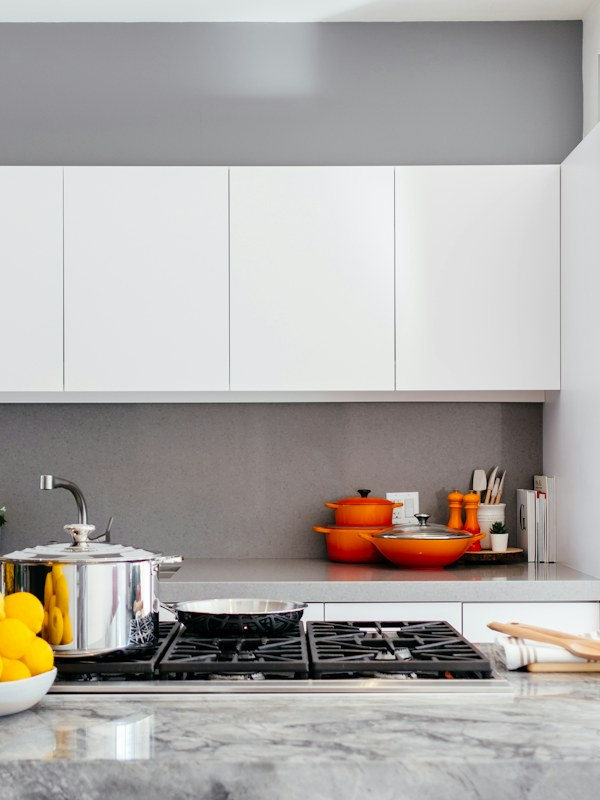
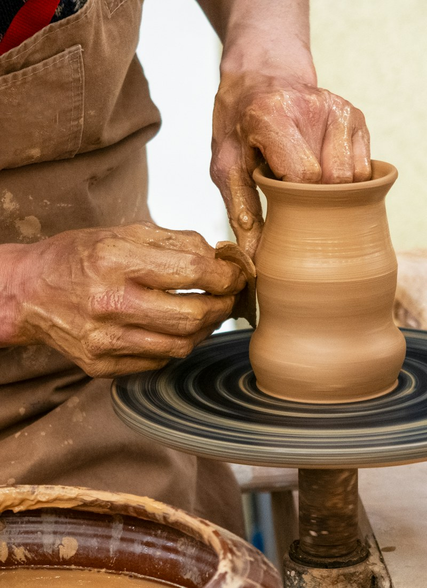
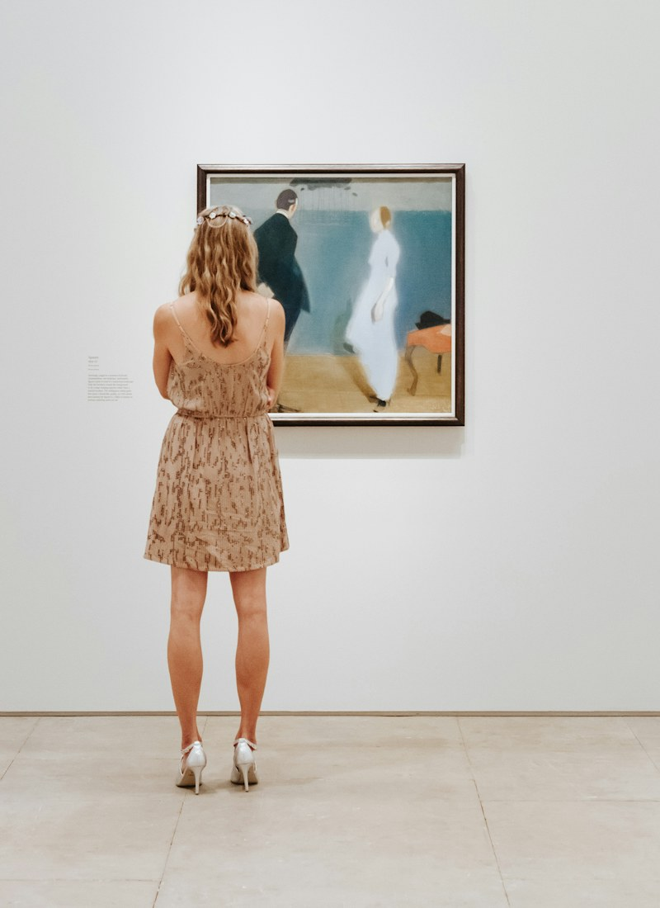

Welcome to my little corner of the weba place for research, thoughts, and curiosity.
Designer & HCI Researcher
I am a designer and HCI researcher. I am currently a full-time research assistant in an interdisciplinary human-computer interaction lab, The Future Lab, at Tsinghua University. I hold a Master's degree in Art Design from the China Academy of Art and a Bachelor's degree in Art Design from the Xi'an Academy of Fine Arts.
My research investigates Human-Computer Interaction (HCI), Human-AI Interaction, Platform Governance, Smart Homes, Virtual Reality, and Participatory Design through a mixed-methods approach that integrates qualitative and quantitative methodologies.
I am currently seeking a PhD position to further develop my research agenda and contribute to advances in this interdisciplinary area. I would be happy to connect if you are interested in my research.
Life beyond the work



Research
My research explores how emerging technologies shape everyday life through two connected directions.
01Socio-technical inquiry
Technology, Power & Situated Vulnerability
Using qualitative research and participatory design, I examine how intelligent technologies and digital platforms reshape privacy, security, labor, and responsibility within homes and workplaces.
Qualitative research · Participatory design · Platform studies
02Interaction futures
Multimodal & Embodied Human-Computer Interaction
I explore how AI interprets visual, auditory, spatial, and bodily signals to support new interactions across smart homes, virtual reality, haptics, memory, and reflection.
Multimodal AI · Embodied interaction · Prototyping
Publications
Designing with Tensions: Reframing Smart Home Ecosystem UX through In-the-Wild Evidence
Harnessing the Power of AI in Qualitative Research: Role Assignment, Engagement, and User Perceptions of AI-Generated Follow-Up Questions in Semi-Structured Interviews
He Zhang, Yueyan Liu, Xin Guan, Jie Cai, John M. Carroll.
Manuscript under revision for International Journal of Human-Computer Studies.
Examining privacy, security, and power through the lived experiences of migrant domestic workers.
Future of Work · Qualitative Research
Labor Reconfiguration During System Upgrades
Investigating how technological change reshapes routines, responsibilities, and coordination at work.
Human-Centered AI · Interviews
AI-Generated Follow-Up Questions
Studying the ethics and social responsibility of LLM-supported interviewing practices.
Embodied Interaction · Design
Centering with Clay
Exploring embodied making and reflective practice through interaction with clay.
Research Methods · Visual Inquiry
Visual Mediation for Sensitive-Topic Interviews
Using visual materials to support trust, expression, and care in research conversations.
Education & Visiting Experience
China Academy of Art
Master of Art Design
Thesis Integrated Design and Theoretical Research Based on Art and Technology.
Advisor Prof. Zhaohui Cheng
Xi'an Academy of Fine Arts
Bachelor of Art Design · China
Thesis Public Expression and Product Design Based on Ceramic Material.
Advisor Prof. Qian Liu
Visiting Experience
Royal College of Art
Visiting Student · London, UK
Explored technology-assisted illustration and digital visualization through the RCA Art and Design program.
Tama Art University
Visiting Student · Tokyo, Japan
Designed tangible interactions for older adults through the International Smart Aging program, with a focus on accessibility and inclusion.
Research Experience
The Future Laboratory, Tsinghua University
Research Assistant · Advisors: Prof. Xinyi Fu and Prof. Yingqing Xu
Participate in research on human-computer interaction.
Collaborate with Huawei, Xiaomi, and other industry partners on interdisciplinary projects, advancing design-driven research approaches for future-oriented technology development.
Led the design and development of the Sensing and AI-engaged Living Lab, overseeing infrastructure planning, equipment setup, and team coordination to support an efficient and creative workspace.
Computer Science and Technology, Tsinghua University
Research Intern · Advisors: Dr. Jie Cai and Prof. Chun Yu
Conducted research on platform governance and the integration of AI into work processes in an HCI laboratory.
Work Experience
UX Designer
Alibaba Group Holding Limited China
Conducted research on user needs using quantitative and qualitative methods, including surveys, website data analysis, interviews, and focus groups, to develop deep insights into users.
Applied user-centered methods to create product prototypes through brainstorming, user story mapping, and A/B testing, followed by UX design. Developed design guidelines and component libraries to improve design efficiency and consistency.
Optimized designs through usability testing and continuously improved the user experience by iterating on data and feedback, developing new features, and refining existing ones.
UX Design Intern
Didi Global Inc. China
Improved the user experience for ride-hailing drivers by contributing to user scenarios, optimizing the application's information architecture, and refining task flows. A driver-safety project introduced an overspeed reminder feature that successfully reduced driver accident rates.
Academic Reviewer
CSCW EA
Extended Abstracts
Computer-Supported Cooperative Work & Social Computing · 2026
CHI EA
Extended Abstracts
Human Factors in Computing Systems · 2026
CSCW
Full Papers
Computer-Supported Cooperative Work & Social Computing · 2025
ICHEC
Full Papers
International Conference on Human-Engaged Computing · 2025
Conference Attendance
April 13-17, 2026
CHI '26
Human Factors in Computing Systems
Barcelona, Spain
October 18-22, 2025
CSCW '25
Computer-Supported Cooperative Work & Social Computing
Bergen, Norway
Skills
D
Design
User Experience Design, Visual Design, Data Visualization, 3D Modelling
R
Research
Qualitative and Quantitative Methods, Participatory Design, Experimental Design, Thematic Analysis